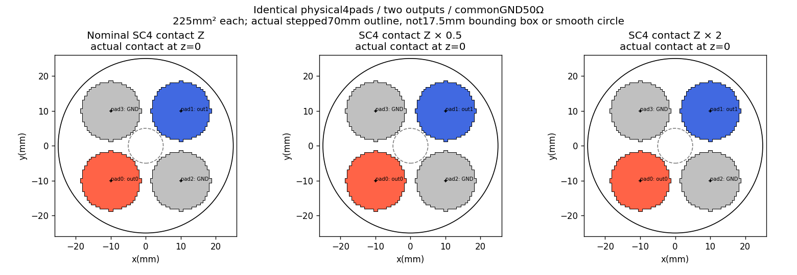
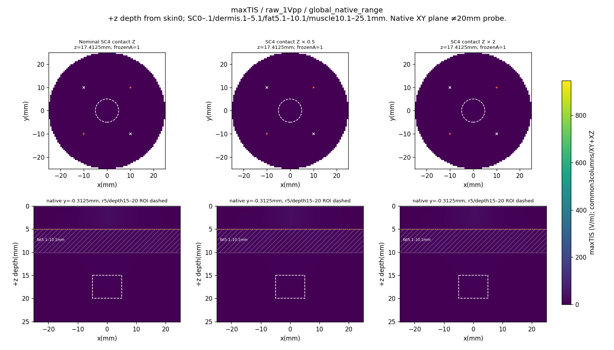
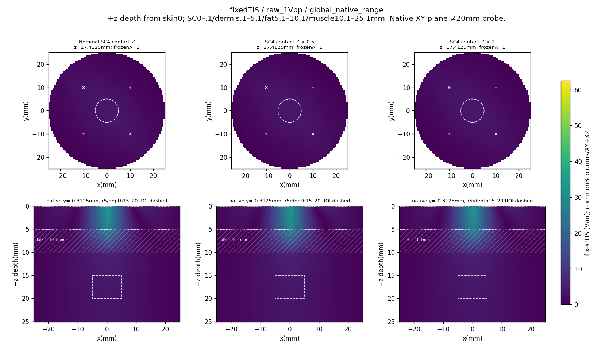
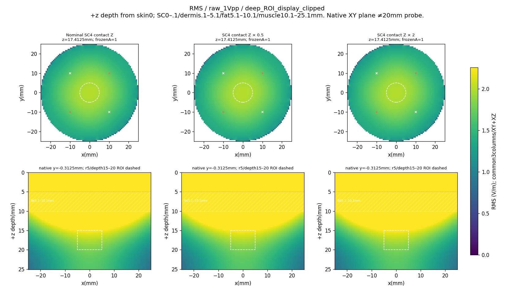
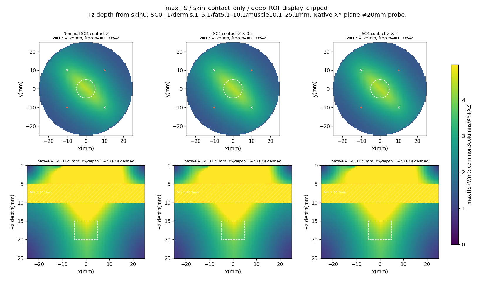
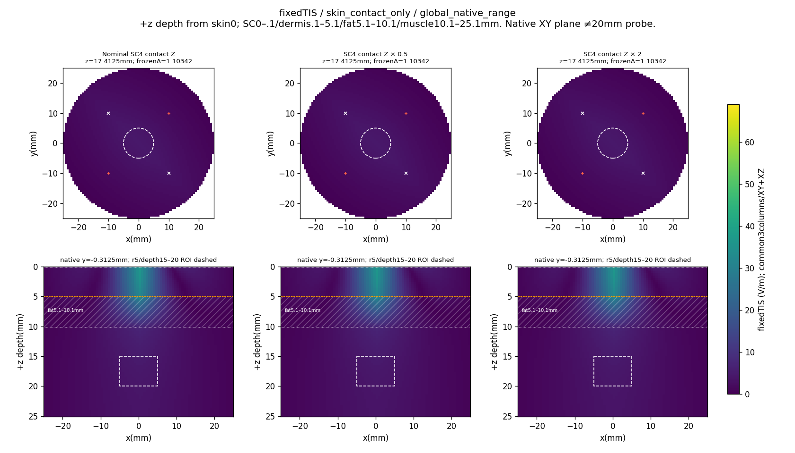
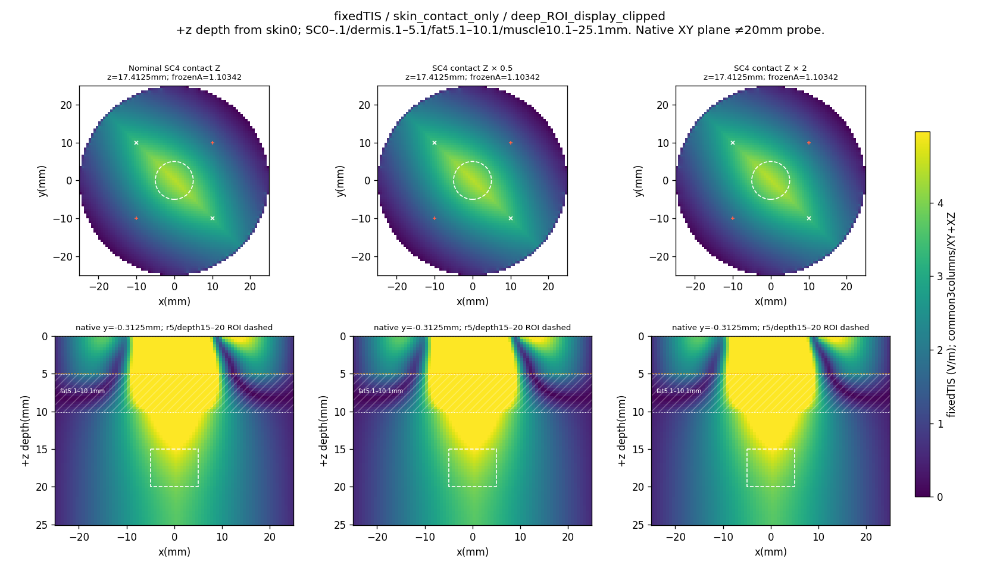

Three columns: nominal/0.5×/2× complex specific contact impedance. All use identical geometry/mask/grid and historical SC2 command/amplitudes: raw1Vpp and frozen SC2skin8. These labels do not assert equal current, power or skin/contact burdens in each variant. Supplemental SC4/contact-rematched modes are not mixed into these maps. Four physical pads/two outputs/commonGND50Ω remain fixed. PBS impedance transfer is uncertain; no extra Rs subtraction or area rescaling.
12heatmaps: three distinct V/m metrics×two frozen amplitudes×global/deepROI display ranges. Each range is common across all3columns and XY/XZ. Deep clipping changes display only. Native XY near17.5mm is labeled with its actual cell depth and is distinct from the20mm differential probe. +z points inward from skin0; r5/depth15–20ROI and fat5.1–10.1mm are marked. Top polygons are actual full-face outlines; deep XY markers are projections, not electrodes at depth. No E/phi decoding, new score/gate, convergence, adoption, loaded-instrument, physiology or safety claim.







source/config/scalar/grid SHA, saved screens and exact color limits